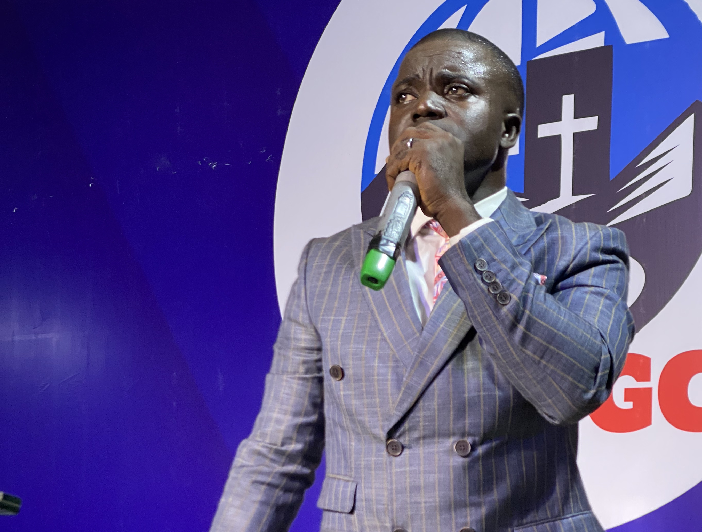

Word Diet International Gospel Church
A prophetic global ministry mandated to raise a standard for God's people through the spoken Word of the Lord.
"THE MINISTRY IS FOR THE RISING OF GOD’S PEOPLE AND FALLING OF EVIL PEOPLE"
"WE HAVE A MANDATE TO RAISE A STANDARD FOR GOD’S PEOPLE THROUGH THE SPOKEN WORD OF THE LORD."

Founded by Apostle Omotosho Tope Joseph
Word Diet International Gospel Church (WDIGC) is an evangelical, word-based and prophetic ministry founded by Apostle Omotosho Tope Joseph, popularly known as OTJ.
Prior to the founding of this global ministry, Apostle Omotosho has been actively involved in praying round the clock for Nigeria, delivering accurate prophetic revelations about various sectors of the economy, conducting intense family deliverance sessions, and preaching the pure, uncompromised gospel of salvation to all who care to listen.
All of our works have been heavily marked with tremendous tangible blessings, deep spiritual breakthroughs, and powerful testimonies from our spiritual family here at Calabar, as well as participants from other cities across Nigeria, Africa, the Caribbeans, and the entire world.
Fellowship With UsCore Doctrines & Christian Faith
Standing firmly on the infallible Word of God, our spiritual foundation is anchored on deep biblical principles and active faith.
Core Doctrines
Our core doctrines are based strictly on the spoken word of God from the Holy Bible. Our beliefs are completely centered on the death, burial, and resurrection of our Lord and Saviour Jesus Christ. His resurrection is the ultimate crux of our Christian faith and our source of eternal life.
Access & Evangelism Mandate
Accepting Jesus as our Lord and personal Saviour is the unique access we have to God, as long as we remain holy, chaste, and prayerful in His presence. That is why we place supreme importance on evangelism. It is our daily practice to preach the word of God, make sinners confess their sins, welcome them to the family of God, and actively depopulate the kingdom of darkness. For no man knows the day the trumpet will sound.
The Four Pillars of Our Mission
WDIGC operates on clear, divine instructions to build up believers and establish the supremacy of God's kingdom globally.
To develop God's people to take their place in life by living in the reality of God's Word with evident proofs in all areas of human endeavors.
To develop God's people into the realms of spirituality thereby living a life of honour to God.
To model God's people into realms of blessings through raw revival.
To deliver God's people by dismantling all satanic and ancestral foundations through God's spoken Word.
Monthly Focus & Objectives
Every month of the year is dedicated to a specific spiritual pillar, aligning our devotion, scriptures, and kingdom results.
Faith
1 John 5:4; Ephesians 6:16
The Word
John 1:1-12; Hebrews 1:3
Signs & Wonders
Psalms 82:5-7; John 3:8
The Holy Spirit
Acts 1:1-8; Isaiah 10:27
Prosperity
3 John 2; Psalms 35:27; Zechariah 1:17
Prayer
1 John 5:14
Healing
Isaiah 53:3-4; Jeremiah 8:22; Matthew 8:17
Wisdom
Proverbs 24:3-4; Isaiah 33:6
Success
Joshua 1:8-10
Vision
Proverbs 29:18; Jeremiah 29:11
Consecration
Hebrews 12:14; 2 Timothy 2:19
Praise
2 Chronicles 20:20-22; Psalms 67:1-7; 149:1-9